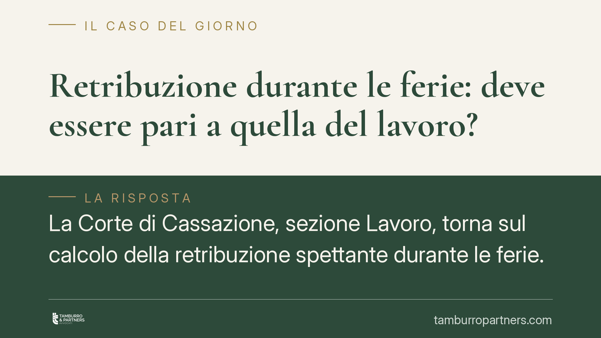

Retribuzione durante le ferie: deve essere pari a quella del lavoro?
La Corte di Cassazione, sezione Lavoro, torna sul calcolo della retribuzione spettante durante le ferie. Non serve una coincidenza esatta con la paga dei giorni lavorati, ma la somma percepita in ferie deve restare comparabile, senza scostamenti tali da disincentivare il riposo. Un principio che incide su compensi variabili, indennità e voci accessorie.

Il caso
La questione riguarda un tema ricorrente nei rapporti di lavoro: quanto deve percepire un dipendente nel periodo di ferie? La risposta incide direttamente sulla busta paga di chi, oltre alla retribuzione base, riceve compensi variabili, indennità o premi legati alla prestazione effettiva.
La Cassazione ha chiarito che la retribuzione feriale non deve necessariamente coincidere, euro su euro, con quella dei giorni lavorati. Deve però restare paragonabile, senza differenze così marcate da rendere le ferie economicamente svantaggiose per il lavoratore.
Inquadramento normativo
Il riferimento cardine è l'art. 7 della direttiva 2003/88/Ce, che sancisce il diritto a ferie annuali retribuite di almeno quattro settimane. La Corte di Giustizia dell'Unione europea ha interpretato questa norma nel senso che il lavoratore, durante le ferie, deve trovarsi in una condizione economica comparabile a quella dei periodi di attività.
La ragione è chiara: se andare in ferie comportasse una perdita retributiva, il dipendente sarebbe disincentivato a esercitare un diritto pensato per la sua salute e il suo recupero psicofisico. Le ferie, in altre parole, non devono "costare".
A questo si aggiunge l'art. 7 della Convenzione Oil n. 132/1970, che prevede il diritto a percepire durante le ferie la retribuzione normale o media. Il quadro nazionale, poi, si completa con la contrattazione collettiva: nel caso esaminato rilevava il Ccnl Terziario Confcommercio, che disciplina le voci retributive da computare.
Il principio: comparabilità, non identità
Il punto centrale della pronuncia è la distinzione tra coincidenza esatta e comparabilità. La retribuzione feriale non deve replicare al centesimo quella di un mese lavorato, perché alcune voci sono per loro natura legate alla prestazione effettiva (si pensi a certe indennità o a compensi per attività specifiche non svolte durante il riposo).
Quello che la normativa vieta è uno scostamento significativo: una riduzione tale da alterare in modo sostanziale il trattamento economico del lavoratore. In quel caso la ferie perderebbe la sua funzione e la retribuzione risulterebbe non conforme al diritto europeo.
La valutazione è quindi concreta. Occorre verificare, voce per voce, quali componenti retributive siano collegate in modo intrinseco alle mansioni ordinarie e quindi da includere nel calcolo, e quali invece dipendano da eventi occasionali estranei alla prestazione tipica.
Implicazioni pratiche
Per il lavoratore la conseguenza è rilevante: se durante le ferie percepisce solo la paga base, escludendo compensi che ricorrono con regolarità e che sono legati alle mansioni abituali, può avere titolo a rivendicare le differenze retributive.
Per il datore di lavoro il tema è di gestione del rischio. Un calcolo della retribuzione feriale che escluda sistematicamente voci variabili strutturali espone a contenzioso e a possibili condanne al pagamento di differenze, con relativi accessori.
La contrattazione collettiva applicata non è un paracadute automatico: se le previsioni del Ccnl risultano meno favorevoli del parametro europeo di comparabilità, prevale quest'ultimo per la quota di ferie garantita dalla direttiva.
Cosa fare in concreto
- Analizzate la struttura della busta paga: individuate quali compensi ricorrono con regolarità e sono legati alle mansioni ordinarie.
- Confrontate la retribuzione media dei periodi lavorati con quella erogata durante le ferie, verificando l'entità dello scostamento.
- Verificate il Ccnl applicato e la sua coerenza con lo standard europeo di comparabilità.
- Datori di lavoro: rivedete i criteri di calcolo della retribuzione feriale per includere le voci variabili strutturali ed evitare contenzioso.
- Lavoratori: conservate le buste paga e documentate le voci percepite, elementi essenziali per un'eventuale rivendicazione.
La materia richiede una valutazione caso per caso, perché l'esito dipende dalla composizione concreta della retribuzione e dal contratto collettivo di riferimento. Consigliamo di far esaminare la propria posizione prima di assumere iniziative.
Disclaimer
Contributo informativo a cura di Tamburro & Partners - Avv. Giuseppe Tamburro. Non costituisce parere legale.
Ogni storia di lavoro ha i suoi tempi.
Se gestisci HR e vuoi un confronto su contenzioso, ispezioni o licenziamenti, scrivi allo studio. Ti rispondiamo entro un giorno lavorativo.